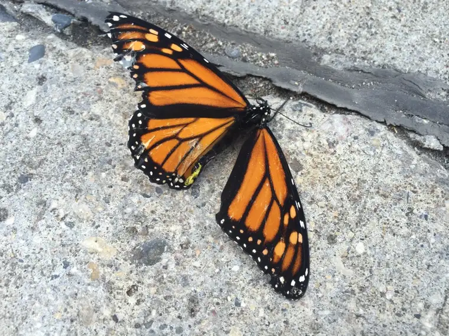
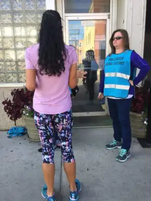

My plan this week had been to write about beauty, the second of the transcendentals I yearn to explore. But then another story emerged. And while it does involve beauty, it’s a broken beauty — beauty marred. Because although God is perfect and has a perfect plan in mind for us all, we have a way of messing it up.
When I saw the butterfly, immediately, it stood out. There against the curb of the concrete, it was clearly wounded. And a car was just pulling up, and happened to park in just the right place for the woman on the passenger’s side to get out and see the broken butterfly there, fighting for its life.

The woman was not there for an abortion appointment. Thank God for that. She was there for a burger. At the corner of our downtown that houses our state’s only abortion facility, a burger join sits, too. Burgers and babies. You come to that spot for one or the other — to end a life, or feed a life. It’s an odd confluence and those of us who come there weekly to pray are aware of the strangeness of it all.
As I watched the butterfly struggling, the parallels came immediately. The butterfly, beautiful, full of life, and now, dying. Just like the babies would die a few feet from where this fragile creature was trying to flap its delicate wings. And, so sadly, as we all knew, it would soon lose the battle, just as the babies would.
The hungry woman seemed concerned about the broken butterfly and tried moving around it. The abortion escort seemed concerned, too, but assured her, “Looks like it’s already been stepped on so it’s fine.” Concerned, but so callous. What kind of impression was she wanting to make? These frequent scenes of contradiction and irony baffle the mind.
A few hours later I would read these words by a North Dakota writer Amanda Eviger: “I pray for them to be able to grasp hold of this gift that makes life worth living – it must fill them with angst to expend so much of their energy fighting for the cause of death. I know it would make me pretty pinched in the face if I didn’t get to cherish the thought of unborn babies nestled in Mom, pregnant women full of joy, and the glorious like.”
Certainly, we see a lot of “pinched faces” out there on the sidewalk. I think Eviger is right. It would have to get tiring to keep resisting the natural and good plan of our God to allow innocent life, which is always good, to flourish.

I started making my way toward the butterfly. I knew I’d want to hold the visual. It seemed important. The escorts first thought I was going to approach the woman and began coming after me, but I told them I just wanted a photo of the butterfly. They laughed at this move, scoffed at me for taking a photo of a flailing insect. It reminded me how little they know me.
As the day progressed, the butterfly faded, and the sidewalk became more boisterous. One passerby became enraged with what we were doing out there and began calling us fear mongers. I know she was concerned about the graphic images. There are many of us who struggle with these being out on the sidewalk, and would prefer other signs were used. But, this is freedom of speech, too, and the man who carries these signs is, at least, peaceful.

Unfortunately, she took her impression and laid it over all of us, spewing about her work in the foster care system and how our time would be better spent helping those kids. Thank God for her work with foster kids. They do deserve love and attention. I don’t know anyone who prays on the sidewalk who would disagree with that. I also don’t understand why she doesn’t see that we are all on the same team — we are all doing something for justice. We see a wrong, and we want to bring light to it, and bring healing. We could give one another high-fives and encouragement. Instead, we need to pick at each other? By that time, I felt defensive and did speak up. Every once in a while, the babies deserve that much. I will be praying for her — that her good work continues, and that her stony heart toward our endeavors will soften, so that we can all recognize that we are all trying to make the world better.
After she left, it was a good time to pray a rosary. We hadn’t gotten too far when the next sidewalk disruption occurred. Andrea had a few things to say to us, too, and by the end of our long and heated conversation, Andrea had promised prayers that I would be killed by a train.
Andrea didn’t fool me for a second. I saw Andrea’s pained soul straight through the exterior. The death threats and accusations, while they’re never pleasant to hear, bounced off my heart. As a friend reminded me a few hours later, hurt people try to hurt people. Andrea has been deeply hurt. Andrea even admitted to wishing to have been aborted, because this world is such an awful place. There’s a lot of self-hate there. And obviously, we cannot love others when we cannot see our own goodness. Andrea was offended at the offer of prayer but prayer is the best response I have to someone so angry. And so I have been praying for Andrea and would ask that you join me, please.
I come back to the butterfly. I don’t know where it ended up, but likely, swept away in the flood of people trampling on the sidewalk. It was a beautiful creature out of place on a cold, hard surface. Meant for fields and flowers, it had wound up on the wrong side of town and gotten caught in the angry crowd.
I see the butterfly as Jesus on the cross. “Forgive them, Father, they know not what they do.” I’d been away from the sidewalk for a few weeks and it took a lot of courage for me to go back. Each time there’s a break, it feels like starting all over again. But I can’t stay away for long. This isn’t some casual time-waster. This is life, and this is death. And my mother-heart calls me there, to watch for those who might be undecided, to offer a gesture of hope for those who have lost any sense of it, to stand in the gap.
And now, I have a broken butterfly that will accompany me. It is gone now, relegated to the gutters, like the babies, like the mothers. But once, it was vibrant and full of life. I believe in the possibilities. So I will not relent. I will not back away from the call to love. I will show up. I will await, with others, for the day all will be free from the threat of death, and do my part to build the kingdom of God on this good earth.
Q4U: What is broken in your life right now? How will you work to heal it?